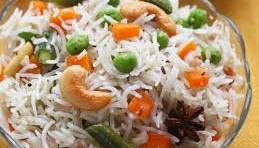
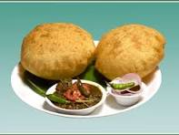

My Recipe Collection
Dal Tadka
| preparation time: |
15 mins |
| cooking time: |
20 mins |
| serves: |
4 |
| difficulty |
Easy |
Ingredients
- 1 cup toor dal (or moong dal)
- 3 cups water
- 1 onion (chopped)
- 1 tomato (chopped)
- 2 green chilies
- 1 tsp ginger-garlic paste
- 1/2 tsp turmeric
- 1 tsp red chili powder
- Salt
- 2 tbsp ghee/oil
- 1 tsp cumin seeds
- 3 garlic cloves (sliced)
- Coriander leaves
Procedure
- Wash dal 2-3 times.
-
Add dal, water, and turmeric in pressure cooker. Cook for 3-4
whistles.
- Heat oil, add cumin seeds and garlic.
- Add onion and cook until soft.
- Add ginger-garlic paste and tomatoes with spices.
- Add cooked dal and simmer for 5-10 minutes.
- Garnish with coriander and serve hot.
Back to top
Aloo Paratha
| preparation time: |
20 mins |
| cooking time: |
15 mins |
| serves: |
4 |
| difficulty |
Medium |
Ingredients
- 2 cups wheat flour
- Water
- Salt
- 3 boiled potatoes (mashed)
- 1 green chili (chopped)
- 1/2 tsp red chili powder
- 1/2 tsp garam masala
- Coriander leaves
- Ghee for cooking
Procedure
- Make soft dough using flour, water, and salt.
- Mix mashed potatoes with spices.
- Stuff mixture inside dough ball.
- Roll gently and cook on tawa with ghee.
- Cook both sides until golden brown.
Back to top
Egg Curry
| preparation time: |
10 mins |
| cooking time: |
20 mins |
| serves: |
4 |
| difficulty |
Medium |

Ingredients
- 4 boiled eggs
- 1 onion (chopped)
- 2 tomatoes (pureed)
- 1 tsp ginger-garlic paste
- 1/2 tsp turmeric
- 1 tsp red chili powder
- 1 tsp coriander powder
- 1/2 tsp garam masala
- Salt
- 2 tbsp oil
Procedure
- Heat oil and cook onions until golden.
- Add ginger-garlic paste and tomatoes with spices.
- Cook until oil separates.
- Add water and simmer.
- Add boiled eggs and cook for 5-7 minutes.
Back to top
Veg Pulao
| preparation time: |
10 mins |
| cooking time: |
25 mins |
| serves: |
4 |
| difficulty |
Easy |

Ingredients
- 1 cup basmati rice
- 1 carrot (chopped)
- 1/2 cup peas
- 1 onion (sliced)
- 1 bay leaf
- 2 cloves
- 1 small cinnamon stick
- 1 tsp cumin seeds
- Salt
- 2 tbsp oil
Procedure
- Soak rice for 20 minutes.
- Heat oil and add whole spices.
- Add onion and vegetables.
- Add rice and water.
- Cook until rice is fluffy.
Back to top
Chole Bhature
| preparation time: |
15 mins |
| cooking time: |
30 mins |
| serves: |
4 |
| difficulty |
Medium |

Ingredients
- 1 cup chickpeas (soaked overnight)
- 1 onion (chopped)
- 2 tomatoes (pureed)
- 1 tsp ginger-garlic paste
- 1 tsp chole masala
- 1/2 tsp turmeric
- 1 tsp red chili powder
- Salt
- 2 tbsp oil
Procedure
- Pressure cook chickpeas until soft.
- Cook onion in oil until brown.
- Add tomato and spices.
- Add boiled chickpeas and simmer.
- Serve with fried bhature.
Back to top